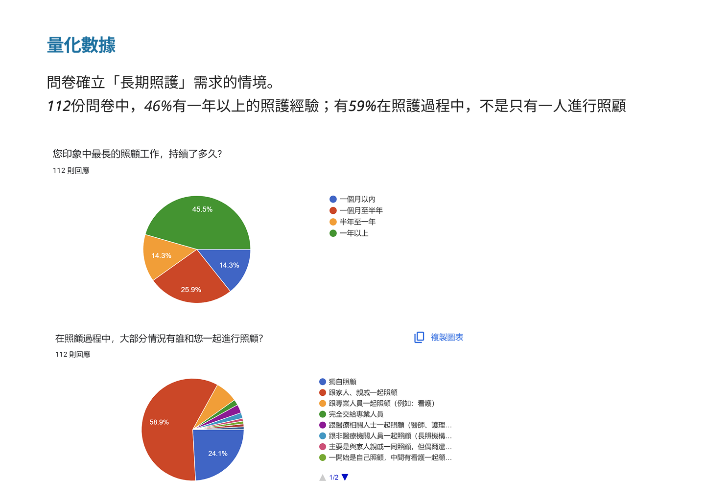
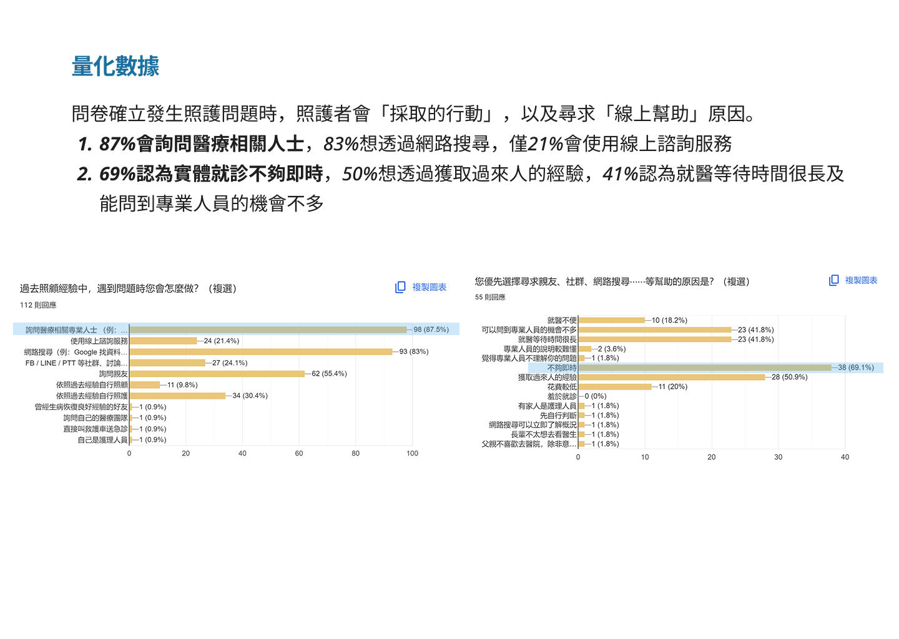

InstaCare
照護諮詢平台 UX 研究
平台上線後使用率偏低、媒合率不理想。透過問卷、深度訪談與易用性測試，找出照護者真正的痛點與線上諮詢的信任障礙，並提出可落地的產品與行銷建議。
組長
深度訪談 · 親合圖
易用性測試報告
（3 個月）
產品上線了，但使用者沒來
InstaCare 是一個照護諮詢 APP，媒合照護者與護理師進行線上諮詢。創辦人 Homer 因家人延緩就醫導致嚴重後果，也因為在家人住院期間受惠於護理師的幫助，希望打造一個讓照護者與護理師都能從中獲益的雙贏平台。
然而，產品上線後面臨一個核心困境：使用者少、媒合率低。問題的根本不在介面，而在於當初沒有花足夠的心力了解市場價值與使用者的真實需求。這個研究專案的目的，就是回頭補上這塊缺口。
照護者在什麼情境下會尋求線上協助？什麼條件讓他們願意付費使用線上諮詢？是什麼阻礙了 InstaCare 成為他們的首選？
從假設到可驗證的研究議題
研究啟動前，我們先透過價值主張畫布盤點 InstaCare 的市場定位與核心假設，分析哪些假設有市場依據、哪些還未被驗證。再用重要性 × 有無證據事實的二維象限，排出研究優先順序，聚焦在「市場上還未被證實但對 InstaCare 重要的議題」。
對一個早期階段的產品來說，真正的問題不是「功能要不要做」，而是更根本的一件事 —
這個商業模式，到底能不能成立？
在資源有限的情況下，研究議題的選擇必須回扣到商業價值。
不是「我們想知道什麼」，而是「我們不知道什麼會讓產品失敗」。
有人需要這個服務嗎？
在什麼情境下會用？
- 無法判斷市場切入點
- 功能設計缺乏依據，容易做白工
議題 1 — 什麼樣的「照護現場」會尋求「線上協助」
有人願意為此付費嗎？
願意付多少？
- 商業模式無法成立
- 免費資源即可取代，服務沒有護城河
議題 2 — 諮詢服務內容與費用的關係研究
這兩個議題不是並列的研究主題，而是因果相連的驗證鏈。
邏輯順序
議題 1 → 議題 2
先釐清「誰在什麼情境下需要」，
才能回答「他願意為什麼付費、付多少」。
為什麼這樣排序
議題 1 是議題 2 的前提，
議題 2 是議題 1 的商業驗證。
在早期產品階段，UX 研究的價值不在於做得多，而在於選對問題。
這兩個議題，是 instacare 商業模式的最小可驗證單位。
問卷確認量、訪談找到為什麼
採用混合研究方法：先以問卷確立量化基礎，再以深度訪談挖掘行為背後的動機與障礙。
桌面研究 + 價值主張畫布
收集二手資料，梳理照護產業現況與競品，並以價值主張畫布盤點 InstaCare 的假設，找出研究優先方向。
問卷調查（n=112）
針對老年照護、術後照護、身心障礙照顧與嬰幼兒照護族群，在 LINE 與 FB 精準投放。確立照護者的行動模式、照護情境分布與線上諮詢接受度的量化基礎。
深度訪談（n=6）
從 112 份問卷中篩選符合條件的受訪者（有線上求助經驗且有付費意願）——嬰幼兒照護者 4 位、長者照護者 2 位。我擔任主訪者，負責引導訪談流程並即時追問。
親合圖（Affinity Diagram）分析
將訪談逐字稿拆解為觀察點，透過親合圖分群，找出重複出現的模式與洞察，最終收斂為多個核心研究發現。
易用性測試（n=17）
針對現有 APP 進行易用性評估，採認知走查法（5 位醫療領域專家）與放聲思考法（12 位有照護經驗的一般民眾），涵蓋首頁瀏覽、護理師選擇、發問流程、首次註冊 4 個旅程階段。結果：12 位一般民眾中僅 4 位完成任務，8 位中途放棄，揭露多項關鍵介面障礙。
研究發現：照護者的行為輪廓與使用障礙
量化數據
問卷資料確立了兩個關鍵基礎：46% 有一年以上照護經驗、59% 是多人共同照護；遇到問題時，87% 會詢問醫療人士、83% 網路搜尋，但僅 21% 使用線上諮詢服務——這個落差正是研究的起點。

46% 有一年以上照護經驗 59% 多人共同照護

87% 詢問醫療人士，僅 21% 使用線上諮詢
問題分類框架：長期照護才是線上諮詢的核心場景
透過訪談，我們將照護者面臨的問題分為兩類：短期問題（如嬰兒發燒、車禍、蚊蟲叮咬）——嚴重時直接就醫，不嚴重時觀察或忽略；長期問題（如癌症術後照顧、老化失能與復健、嬰幼兒教育發展）——情況複雜且持續演變，照護者需要滾動調整策略，不斷尋求最佳解方。
直接處理，不需追蹤
嚴重時就醫，不嚴重時觀察等待。單次事件，照護者有清楚的行動路徑，不會尋求線上諮詢。
複雜且需持續支持
癌症術後照顧、老化失能、嬰幼兒發展——情況反覆、牽涉多人、沒有標準答案，正是線上專業諮詢最有潛力介入的場景。
洞察 1：長期照護需要持續陪伴，不是單次解答
照護者面對急性問題（燒燙傷、突然不適）會直接就醫，但長期照護問題（老化失能、術後復原、嬰幼兒發展）的複雜性與持續性，讓零散的網路搜尋或單次諮詢難以滿足需求。
這類問題沒有標準答案，照護者需要能跟著情況滾動調整的專業支持——這正是護理師線上諮詢最有價值、也最難被取代的場景，但 InstaCare 目前的產品設計並未凸顯這個差異點。
洞察 2：「線上諮詢護理師」這個概念本身就是障礙
訪談揭露一個關鍵障礙：多數照護者根本不知道「線上諮詢護理師」這個選項存在，或是把它和「線上看診醫師」混為一談。照護者不是「不想用」，而是「想不到」。
這代表在信任建立之前，任何轉換策略都是對空氣出拳。問題不是 InstaCare 的服務不好，而是市場教育根本還沒發生。
受訪者對「線上諮詢」的認知呈現兩種類型：① 完全不知道這個管道存在，發生問題時無法聯想到；② 知道但概念模糊，誤以為等同於線上看診，或覺得只是「用文字傳訊息給醫生」。
洞察 3：多人照護讓資訊斷鏈，諮詢成果難以延續
59% 的照護者是多人輪替照護。在這樣的場景中，即使諮詢了護理師、得到了建議，回到照護現場卻面臨資訊無法同步的問題：每個人的理解都不同、醫囑難以持續執行、照護紀錄各自分散。
這讓諮詢的效果大打折扣——使用者不是因為服務不好而不再回來，而是因為「知識沒有被留下來」，下次遇到問題還是從零開始。
洞察 4：為自己怯步，為他人勇往——「為他而問」才是真實觸發動機
問卷中，92% 的受訪者曾照顧家屬，卻只有 17% 曾為自己、16% 為朋友尋求協助。人們面對自身不適時，往往因「怕麻煩別人」而退縮；但面對親友的狀況，卻願意主動出擊。
這個洞察改變了產品策略的方向：InstaCare 的目標用戶不只是「自己有問題的人」，更是「替身邊重要的人焦慮找答案的人」。以「為他而問」作為拉新核心，能同時觸及照護者與被照護者兩端，讓用戶數量指數成長。
① 做夥諮詢——支援家屬與病患、多位照護者同時參與一次諮詢；② 切換不同醫療史——因應同一人照顧多位親友的情況；③ 諮詢結果分享——讓幫忙詢問的家屬能把建議傳給本人；④ 贈送諮詢卷——以「送出關心」的形式，讓猶豫就診的親友有接觸服務的契機。
易用性測試：4 大介面障礙讓 8 人中途放棄
為驗證研究洞察是否對應到真實的產品體驗，同步進行易用性測試。結合認知走查法與放聲思考法，17 位受測者完整走過 4 個使用旅程。 結果顯示，12 位一般民眾中僅 4 位完成任務，8 位中途放棄，障礙集中於四個區域：
不知道要選「我的問題」還是「找護理師」
兩個入口功能重疊，使用者無法判斷差異。部分受測者完全找不到發問路徑，直接放棄 APP。
護理師資訊不夠專業，引發可信度疑慮
生活照、暱稱、經歷格式不一，讓使用者懷疑護理師資格。有受測者表示「想先上網找評價才敢用」。
還沒諮詢就要認證信用卡，觸發盜刷疑慮
信用卡驗證出現時機太早，多位受測者因此放棄流程；部分人偏好線下支付，但沒有選項。
空白頁面讓人不知道發生了什麼
發案配對與紀錄頁面尚未使用時呈空白，缺乏引導說明，讓使用者誤以為是錯誤或功能缺失。
從洞察到可落地的建議
四個洞察對應四個層次的介入方向，涵蓋產品策略、行銷路徑、功能設計與介面優化：
從「回答問題」到「陪伴照護歷程」
介紹平台護理師在長期照護問題上的處理經驗（癌症術後、老化復健、嬰幼教育），建立專業信任感；引入營養師、幼教老師等多元專業角色，從相關社群與醫院管道導流。
同時新增「為他而問」系列功能：做夥諮詢（多人共同參與）、切換不同醫療史（照顧多位親友）、諮詢結果分享（讓家屬把建議傳給本人）、贈送諮詢卷（以關心為由拉近猶豫中的親友）——讓照護者的情感動機成為產品的最大傳播力。
根據行銷 5A，以溫暖品牌形象打入社群
透過優化 SEO，提高照護者在以症狀關鍵字搜尋時主動接觸服務的機會；透過客戶案例與內容行銷，傳遞「線上諮詢護理師」與「線上看診」的差異，教育使用者。提供初次使用優惠，降低嘗試心理門檻。
針對媽媽族群（研究中最仰賴社群資源的群體），以溫暖、專業的品牌形象進駐活躍的母嬰社團，由品牌護理師參與社群、闢謠、傳遞照護知識，讓口碑在社群間有機擴散。同時在諮詢互動中導入貼圖、諮詢後寄送小叮嚀與感謝函，在專業之外建立情感連結，提升回購意願。
整合「照護諮詢紀錄」，讓知識不只在對話框裡
增加「問題範例、病症描述表、基本問診機器人」等工具，引導照護者提供關鍵資訊，讓線上溝通更精準、減少「說了半天還是說不清楚」的挫折感；
提供照護諮詢紀錄整合功能——讓多位輪替照護者能共同追蹤、同步照護資訊，讓每一次諮詢的成果能延續到下次照護中，而不是每次都從零開始。這份紀錄在實體就診時也能協助照護者向醫師說明病史，進一步提升服務的不可替代性。
介面優先改善：讓使用者走得進來、留得下去
① 合併或明確區隔「我的問題」與「找護理師」入口，以清楚說明引導使用者找到正確路徑；② 統一護理師資訊格式（本名或院所科別、年資標準化、專長細分），提升第一眼的專業可信度；③ 將信用卡設定移至首次註冊流程，並新增超商、轉帳等多元支付選項，消除付款焦慮；④ 為空白狀態頁面加入引導說明，讓首次使用的使用者知道「這裡還沒有資料，先去做 XX」，而不是陷入困惑。
UX 研究讓我重新理解「產品問題」
這是一個透過實戰營完成的 UX 研究專案，課程雖然只有 3 個月，但完整跑了一次從問題定義、研究設計到洞察產出的研究流程，內容非常扎實，收穫比預期大得多。
最大的收穫是對 UX 核心價值的重新認識。UX 不只是讓介面更好用，它的本質是幫助產品做風險評估——在充滿不確定性的決策過程中，研究就像在迷霧中點亮方向燈，讓前進的路更清晰、錯誤更少。
對 InstaCare 而言，研究告訴我們問題不在功能本身，而在市場教育與信任建立的順序。這個發現沒辦法靠猜測得到，只有系統性的研究才能揭示它。帶著這個認識，我對「先做研究再做產品」有了更深的信念，也更清楚 UX 研究在產品週期中應該在什麼位置發生。